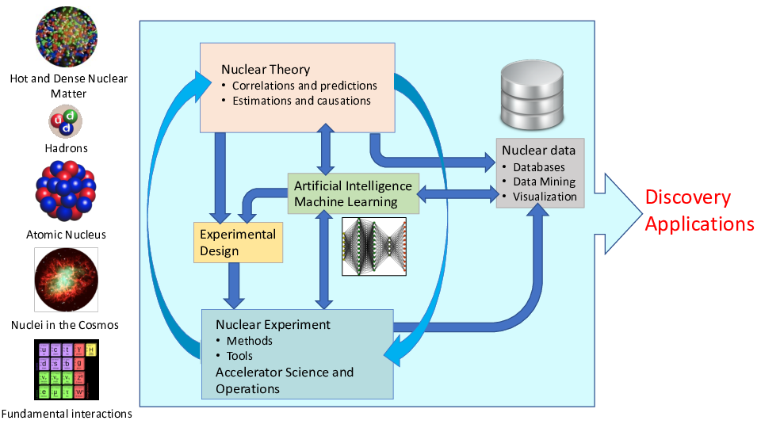

Artificial intelligence and machine learning in physics
Department of Physics and Astronomy colloquium, University of Catania and celebrating MARCELLO BALDO'S 80th birthday
What is this talk about?
The main emphasis is to give you a short and pedestrian introduction to the whys and hows we can use (with several examples) machine learning methods in physics. And why this could (or should) be of interest.
Parts of this talk are based on Artificial Intelligence and Machine Learning in Nuclear Physics, Amber Boehnlein et al., Reviews Modern of Physics 94, 031003 (2022)
Thanks to many
Jane Kim (MSU), Julie Butler (MSU), Patrick Cook (MSU), Danny Jammooa (MSU), Daniel Bazin (MSU), Dean Lee (MSU), Witek Nazarewicz (MSU), Michelle Kuchera (Davidson College), Even Nordhagen (UiO), Robert Solli (UiO, Expert Analytics), Bryce Fore (ANL), Alessandro Lovato (ANL), Stefano Gandolfi (LANL), Francesco Pederiva (UniTN), and Giuseppe Carleo (EPFL). Niyaz Beysengulov and Johannes Pollanen (experiment, MSU); Zachary Stewart, Jared Weidman, and Angela Wilson (quantum chemistry, MSU) Jonas Flaten, Oskar, Leinonen, Øyvind Sigmundson Schøyen, Stian Dysthe Bilek, and Håkon Emil Kristiansen (UiO). Marianne Bathen and Lasse Vines (experiments (UiO). Excuses to those I have omitted.
One of the first many-body workshops at the ECT$*$, Trento summer 1997

Pairing in dense matter

AI/ML and some statements you may have heard (and what do they mean?)
- Fei-Fei Li on ImageNet: map out the entire world of objects (The data that transformed AI research)
- Russell and Norvig in their popular textbook: relevant to any intellectual task; it is truly a universal field (Artificial Intelligence, A modern approach)
- Woody Bledsoe puts it more bluntly: in the long run, AI is the only science (quoted in Pamilla McCorduck, Machines who think)
If you wish to have a critical read on AI/ML from a societal point of view, see Kate Crawford's recent text Atlas of AI. See also https://www.nationaldefensemagazine.org/articles/2023/3/24/ukraine-a-living-lab-for-ai-warfare
Here: with AI/ML we intend a collection of machine learning methods with an emphasis on statistical learning and data analysisTypes of machine learning
The approaches to machine learning are many, but are often split into two main categories. In supervised learning we know the answer to a problem, and let the computer deduce the logic behind it. On the other hand, unsupervised learning is a method for finding patterns and relationship in data sets without any prior knowledge of the system.
An emerging third category is reinforcement learning. This is a paradigm of learning inspired by behavioural psychology, where learning is achieved by trial-and-error, solely from rewards and punishment.
Main categories
Another way to categorize machine learning tasks is to consider the desired output of a system. Some of the most common tasks are:
- Classification: Outputs are divided into two or more classes. The goal is to produce a model that assigns inputs into one of these classes. An example is to identify digits based on pictures of hand-written ones. Classification is typically supervised learning.
- Regression: Finding a functional relationship between an input data set and a reference data set. The goal is to construct a function that maps input data to continuous output values.
- Clustering: Data are divided into groups with certain common traits, without knowing the different groups beforehand. It is thus a form of unsupervised learning.
The plethora of machine learning algorithms/methods
- Deep learning: Neural Networks (NN), Convolutional NN, Recurrent NN, Boltzmann machines, autoencoders and variational autoencoders and generative adversarial networks, generative models
- Bayesian statistics and Bayesian Machine Learning, Bayesian experimental design, Bayesian Regression models, Bayesian neural networks, Gaussian processes and much more
- Dimensionality reduction (Principal component analysis), Clustering Methods and more
- Ensemble Methods, Random forests, bagging and voting methods, gradient boosting approaches
- Linear and logistic regression, Kernel methods, support vector machines and more
- Reinforcement Learning; Transfer Learning and more
What are the basic ingredients?
Almost every problem in ML and data science starts with the same ingredients:
- The dataset \( \mathbf{x} \) (could be some observable quantity of the system we are studying)
- A model which is a function of a set of parameters \( \mathbf{\alpha} \) that relates to the dataset, say a likelihood function \( p(\mathbf{x}\vert \mathbf{\alpha}) \) or just a simple model \( f(\mathbf{\alpha}) \)
- A so-called loss/cost/risk function \( \mathcal{C} (\mathbf{x}, f(\mathbf{\alpha})) \) which allows us to decide how well our model represents the dataset.
We seek to minimize the function \( \mathcal{C} (\mathbf{x}, f(\mathbf{\alpha})) \) by finding the parameter values which minimize \( \mathcal{C} \). This leads to various minimization algorithms. It may surprise many, but at the heart of all machine learning algortihms there is an optimization problem.
Low-level machine lerning, the family of ordinary least squares methods
Our data which we want to apply a machine learning method on, consist of a set of inputs \( \boldsymbol{x}^T=[x_0,x_1,x_2,\dots,x_{n-1}] \) and the outputs we want to model \( \boldsymbol{y}^T=[y_0,y_1,y_2,\dots,y_{n-1}] \). We assume that the output data can be represented (for a regression case) by a continuous function \( f \) through
$$
\boldsymbol{y}=f(\boldsymbol{x})+\boldsymbol{\epsilon}.
$$
Setting up the equations
In linear regression we approximate the unknown function with another continuous function \( \tilde{\boldsymbol{y}}(\boldsymbol{x}) \) which depends linearly on some unknown parameters \( \boldsymbol{\theta}^T=[\theta_0,\theta_1,\theta_2,\dots,\theta_{p-1}] \).
The input data can be organized in terms of a so-called design matrix with an approximating function \( \boldsymbol{\tilde{y}} \)
$$
\boldsymbol{\tilde{y}}= \boldsymbol{X}\boldsymbol{\theta},
$$
The objective/cost/loss function
The simplest approach is the mean squared error
$$
C(\boldsymbol{\beta})=\frac{1}{n}\sum_{i=0}^{n-1}\left(y_i-\tilde{y}_i\right)^2=\frac{1}{n}\left\{\left(\boldsymbol{y}-\boldsymbol{\tilde{y}}\right)^T\left(\boldsymbol{y}-\boldsymbol{\tilde{y}}\right)\right\},
$$
or using the matrix \( \boldsymbol{X} \) and in a more compact matrix-vector notation as
$$
C(\boldsymbol{\beta})=\frac{1}{n}\left\{\left(\boldsymbol{y}-\boldsymbol{X}\boldsymbol{\theta}\right)^T\left(\boldsymbol{y}-\boldsymbol{X}\boldsymbol{\theta}\right)\right\}.
$$
This function represents one of many possible ways to define the so-called cost function.
Training solution
Optimizing wrt to th eunknown paramters \( \theta_j \) we get
$$
\boldsymbol{X}^T\boldsymbol{y} = \boldsymbol{X}^T\boldsymbol{X}\boldsymbol{\theta},
$$
and if the matrix \( \boldsymbol{X}^T\boldsymbol{X} \) is invertible we have the optimal values
$$
\hat{\boldsymbol{\theta}} =\left(\boldsymbol{X}^T\boldsymbol{X}\right)^{-1}\boldsymbol{X}^T\boldsymbol{y}.
$$
Ridge and LASSO Regression
Our optimization problem is
$$
{\displaystyle \min_{\boldsymbol{\theta}\in {\mathbb{R}}^{p}}}\frac{1}{n}\left\{\left(\boldsymbol{y}-\boldsymbol{X}\boldsymbol{\theta}\right)^T\left(\boldsymbol{y}-\boldsymbol{X}\boldsymbol{\theta}\right)\right\}.
$$
or we can state it as
$$
{\displaystyle \min_{\boldsymbol{\theta}\in
{\mathbb{R}}^{p}}}\frac{1}{n}\sum_{i=0}^{n-1}\left(y_i-\tilde{y}_i\right)^2=\frac{1}{n}\vert\vert \boldsymbol{y}-\boldsymbol{X}\boldsymbol{\theta}\vert\vert_2^2,
$$
where we have used the definition of a norm-2 vector, that is
$$
\vert\vert \boldsymbol{x}\vert\vert_2 = \sqrt{\sum_i x_i^2}.
$$
From OLS to Ridge and Lasso
By minimizing the above equation with respect to the parameters \( \boldsymbol{\theta} \) we could then obtain an analytical expression for the parameters \( \boldsymbol{\theta} \). We can add a regularization parameter \( \lambda \) by defining a new cost function to be optimized, that is
$$
{\displaystyle \min_{\boldsymbol{\theta}\in
{\mathbb{R}}^{p}}}\frac{1}{n}\vert\vert \boldsymbol{y}-\boldsymbol{X}\boldsymbol{\theta}\vert\vert_2^2+\lambda\vert\vert \boldsymbol{\theta}\vert\vert_2^2
$$
which leads to the Ridge regression minimization problem where we require that \( \vert\vert \boldsymbol{\theta}\vert\vert_2^2\le t \), where \( t \) is a finite number larger than zero. We do not include such a constraints in the discussions here.
Lasso regression
Defining
$$
C(\boldsymbol{X},\boldsymbol{\theta})=\frac{1}{n}\vert\vert \boldsymbol{y}-\boldsymbol{X}\boldsymbol{\theta}\vert\vert_2^2+\lambda\vert\vert \boldsymbol{\theta}\vert\vert_1,
$$
we have a new optimization equation
$$
{\displaystyle \min_{\boldsymbol{\theta}\in
{\mathbb{R}}^{p}}}\frac{1}{n}\vert\vert \boldsymbol{y}-\boldsymbol{X}\boldsymbol{\theta}\vert\vert_2^2+\lambda\vert\vert \boldsymbol{\theta}\vert\vert_1
$$
which leads to Lasso regression. Lasso stands for least absolute shrinkage and selection operator. Here we have defined the norm-1 as
$$
\vert\vert \boldsymbol{x}\vert\vert_1 = \sum_i \vert x_i\vert.
$$
Lots of room for creativity
Not all the algorithms and methods can be given a rigorous mathematical justification, opening up thereby for experimenting and trial and error and thereby exciting new developments.
A solid command of linear algebra, multivariate theory, probability theory, statistical data analysis, optimization algorithms, understanding errors and Monte Carlo methods is important in order to understand many of the various algorithms and methods.
Job market, a personal statement: A familiarity with ML is almost becoming a prerequisite for many of the most exciting employment opportunities. And add quantum computing and there you are!
Selected references
- Mehta et al. and Physics Reports (2019).
- Machine Learning and the Physical Sciences by Carleo et al
- Artificial Intelligence and Machine Learning in Nuclear Physics, Amber Boehnlein et al., Reviews Modern of Physics 94, 031003 (2022)
- Dilute neutron star matter from neural-network quantum states by Fore et al, Physical Review Research 5, 033062 (2023)
- Neural-network quantum states for ultra-cold Fermi gases, Jane Kim et al, Nature Physics Communcication, submitted
- Message-Passing Neural Quantum States for the Homogeneous Electron Gas, Gabriel Pescia, Jane Kim et al. arXiv.2305.07240,
- Efficient solutions of fermionic systems using artificial neural networks, Nordhagen et al, Frontiers in Physics 11, 2023
- Report from the A.I. For Nuclear Physics Workshop by Bedaque et al., Eur J. Phys. A 57, (2021)
- Particle Data Group summary on ML methods
Machine learning. A simple perspective on the interface between ML and Physics

ML in Nuclear Physics (or any field in physics)

Machine learning in physics (my bias): Why?
- ML tools can help us to speed up the scientific process cycle and hence facilitate discoveries
- Enabling fast emulation for big simulations
- Revealing the information content of measured observables w.r.t. theory
- Identifying crucial experimental data for better constraining theory
- Providing meaningful input to applications and planned measurements
- ML tools can help us to reveal the structure of our models
- Parameter estimation with heterogeneous/multi-scale datasets
- Model reduction
- ML tools can help us to provide predictive capability
- Theoretical results often involve ultraviolet and infrared extrapolations due to Hilbert-space truncations
- Uncertainty quantification essential
- Theoretical models are often applied to entirely new nuclear systems and conditions that are not accessible to experiment
Examples of applications of ML in physics
The large amount of degrees of freedom pertain to both theory and experiment in physics. With increasingly complicated experiments that produce large amounts data, automated classification of events becomes increasingly important.
- Reconstruction of particle trajectories or classification of events are typical examples where ML methods are being used. However, since these data can often be extremely noisy, the precision necessary for discovery in physics requires algorithmic improvements. Research along such directions, interfacing nuclear physics with AI/ML is expected to play a significant role in physics discoveries related to new facilities. The treatment of corrupted data in imaging and image processing is also a relevant topic.
- Design of detectors represents an important area of applications for ML/AI methods in subatomic physics.
Scientific Machine Learning
An important and emerging field is what has been dubbed as scientific ML, see the article by Deiana et al "Applications and Techniques for Fast Machine Learning in Science, Big Data 5, 787421 (2022):https://doi.org/10.3389/fdata.2022.787421"
The authors discuss applications and techniques for fast machine learning (ML) in science – the concept of integrating power ML methods into the real-time experimental data processing loop to accelerate scientific discovery. The report covers three main areas
- applications for fast ML across a number of scientific domains;
- techniques for training and implementing performant and resource-efficient ML algorithms;
- and computing architectures, platforms, and technologies for deploying these algorithms.
ML for detectors

Physics driven Machine Learning
Another hot topic is what has loosely been dubbed Physics-driven deep learning. See the recent work on Learning nonlinear operators via DeepONet based on the universal approximation theorem of operators, Nature Machine Learning, vol 3, 218 (2021).
A less known but powerful result is that an NN with a single hidden layer can accurately approximate any nonlinear continuous operator. This universal approximation theorem of operators is suggestive of the structure and potential of deep neural networks (DNNs) in learning continuous operators or complex systems from streams of scattered data. ... We demonstrate that DeepONet can learn various explicit operators, such as integrals and fractional Laplacians, as well as implicit operators that represent deterministic and stochastic differential equations.
And more
- An important application of AI/ML methods is to improve the estimation of bias or uncertainty due to the introduction of or lack of physical constraints in various theoretical models.
- In theory, we expect to use AI/ML algorithms and methods to improve our knowledge about correlations of physical model parameters in data for quantum many-body systems. Deep learning methods show great promise in circumventing the exploding dimensionalities encountered in quantum mechanical many-body studies.
- Merging a frequentist approach (the standard path in ML theory) with a Bayesian approach, has the potential to infer better probabilitity distributions and error estimates.
- Machine Learning and Quantum Computing is a very interesting avenue to explore. See for example a recent talk by Sofia Vallecorsa.
Argon-46 by Solli et al., NIMA 1010, 165461 (2021)
Representations of two events from the Argon-46 experiment. Each row is one event in two projections, where the color intensity of each point indicates higher charge values recorded by the detector. The bottom row illustrates a carbon event with a large fraction of noise, while the top row shows a proton event almost free of noise.

Many-body physics, Quantum Monte Carlo and deep learning
Given a hamiltonian \( H \) and a trial wave function \( \Psi_T \), the variational principle states that the expectation value of \( \langle H \rangle \), defined through
$$
\langle E \rangle =
\frac{\int d\boldsymbol{R}\Psi^{\ast}_T(\boldsymbol{R})H(\boldsymbol{R})\Psi_T(\boldsymbol{R})}
{\int d\boldsymbol{R}\Psi^{\ast}_T(\boldsymbol{R})\Psi_T(\boldsymbol{R})},
$$
is an upper bound to the ground state energy \( E_0 \) of the hamiltonian \( H \), that is
$$
E_0 \le \langle E \rangle.
$$
In general, the integrals involved in the calculation of various expectation values are multi-dimensional ones. Traditional integration methods such as the Gauss-Legendre will not be adequate for say the computation of the energy of a many-body system. Basic philosophy: Let a neural network find the optimal wave function
Quantum Monte Carlo Motivation
Choose a trial wave function \( \psi_T(\boldsymbol{R}) \).
$$
P(\boldsymbol{R},\boldsymbol{\alpha})= \frac{\left|\psi_T(\boldsymbol{R},\boldsymbol{\alpha})\right|^2}{\int \left|\psi_T(\boldsymbol{R},\boldsymbol{\alpha})\right|^2d\boldsymbol{R}}.
$$
This is our model, or likelihood/probability distribution function (PDF). It depends on some variational parameters \( \boldsymbol{\alpha} \). The approximation to the expectation value of the Hamiltonian is now
$$
\langle E[\boldsymbol{\alpha}] \rangle =
\frac{\int d\boldsymbol{R}\Psi^{\ast}_T(\boldsymbol{R},\boldsymbol{\alpha})H(\boldsymbol{R})\Psi_T(\boldsymbol{R},\boldsymbol{\alpha})}
{\int d\boldsymbol{R}\Psi^{\ast}_T(\boldsymbol{R},\boldsymbol{\alpha})\Psi_T(\boldsymbol{R},\boldsymbol{\alpha})}.
$$
Quantum Monte Carlo Motivation
$$
E_L(\boldsymbol{R},\boldsymbol{\alpha})=\frac{1}{\psi_T(\boldsymbol{R},\boldsymbol{\alpha})}H\psi_T(\boldsymbol{R},\boldsymbol{\alpha}),
$$
called the local energy, which, together with our trial PDF yields
$$
\langle E[\boldsymbol{\alpha}] \rangle=\int P(\boldsymbol{R})E_L(\boldsymbol{R},\boldsymbol{\alpha}) d\boldsymbol{R}\approx \frac{1}{N}\sum_{i=1}^NE_L(\boldsymbol{R_i},\boldsymbol{\alpha})
$$
with \( N \) being the number of Monte Carlo samples.
Energy derivatives
The local energy as function of the variational parameters defines now our objective/cost function.
To find the derivatives of the local energy expectation value as function of the variational parameters, we can use the chain rule and the hermiticity of the Hamiltonian.
Let us define (with the notation \( \langle E[\boldsymbol{\alpha}]\rangle =\langle E_L\rangle \))
$$
\bar{E}_{\alpha_i}=\frac{d\langle E_L\rangle}{d\alpha_i},
$$
as the derivative of the energy with respect to the variational parameter \( \alpha_i \) We define also the derivative of the trial function (skipping the subindex \( T \)) as
$$
\bar{\Psi}_{i}=\frac{d\Psi}{d\alpha_i}.
$$
Derivatives of the local energy
The elements of the gradient of the local energy are
$$
\bar{E}_{i}= 2\left( \langle \frac{\bar{\Psi}_{i}}{\Psi}E_L\rangle -\langle \frac{\bar{\Psi}_{i}}{\Psi}\rangle\langle E_L \rangle\right).
$$
From a computational point of view it means that you need to compute the expectation values of
$$
\langle \frac{\bar{\Psi}_{i}}{\Psi}E_L\rangle,
$$
and
$$
\langle \frac{\bar{\Psi}_{i}}{\Psi}\rangle\langle E_L\rangle
$$
These integrals are evaluted using MC intergration (with all its possible error sources). Use methods like stochastic gradient or other minimization methods to find the optimal parameters.
Monte Carlo methods and Neural Networks
Machine Learning and the Deuteron by Kebble and Rios and Variational Monte Carlo calculations of \( A\le 4 \) nuclei with an artificial neural-network correlator ansatz by Adams et al.
Adams et al:
$$
\begin{align}
H_{LO} &=-\sum_i \frac{{\vec{\nabla}_i^2}}{2m_N}
+\sum_{i < j} {\left(C_1 + C_2\, \vec{\sigma_i}\cdot\vec{\sigma_j}\right)
e^{-r_{ij}^2\Lambda^2 / 4 }}
\nonumber\\
&+D_0 \sum_{i < j < k} \sum_{\text{cyc}}
{e^{-\left(r_{ik}^2+r_{ij}^2\right)\Lambda^2/4}}\,,
\tag{1}
\end{align}
$$
where \( m_N \) is the mass of the nucleon, \( \vec{\sigma_i} \) is the Pauli matrix acting on nucleon \( i \), and \( \sum_{\text{cyc}} \) stands for the cyclic permutation of \( i \), \( j \), and \( k \). The low-energy constants \( C_1 \) and \( C_2 \) are fit to the deuteron binding energy and to the neutron-neutron scattering length
Deep learning neural networks, Variational Monte Carlo calculations of \( A\le 4 \) nuclei with an artificial neural-network correlator ansatz by Adams et al.
An appealing feature of the neural network ansatz is that it is more general than the more conventional product of two- and three-body spin-independent Jastrow functions
$$
\begin{align}
|\Psi_V^J \rangle = \prod_{i < j < k} \Big( 1-\sum_{\text{cyc}} u(r_{ij}) u(r_{jk})\Big) \prod_{i < j} f(r_{ij}) | \Phi\rangle\,,
\tag{2}
\end{align}
$$
which is commonly used for nuclear Hamiltonians that do not contain tensor and spin-orbit terms. The above function is replaced by a four-layer Neural Network.
Dilute neutron star matter from neural-network quantum states by Fore et al, Physical Review Research 5, 033062 (2023) at density \( \rho=0.04 \) fm$^{-3}$

Pairing and Spin-singlet and triplet two-body distribution functions at \( \rho=0.01 \) fm$^{-3}$

Pairing and Spin-singlet and triplet two-body distribution functions at \( \rho=0.04 \) fm$^{-3}$

Pairing and Spin-singlet and triplet two-body distribution functions at \( \rho=0.08 \) fm$^{-3}$

The electron gas in three dimensions with \( N=14 \) electrons (Wigner-Seitz radius \( r_s=2 \) a.u.), Gabriel Pescia, Jane Kim et al. arXiv.2305.07240,

Efficient solutions of fermionic systems using artificial neural networks, Nordhagen et al, Frontiers in Physics 11, 2023
The Hamiltonian of the quantum dot is given by
$$ \hat{H} = \hat{H}_0 + \hat{V},
$$
where \( \hat{H}_0 \) is the many-body HO Hamiltonian, and \( \hat{V} \) is the inter-electron Coulomb interactions. In dimensionless units,
$$ \hat{V}= \sum_{i < j}^N \frac{1}{r_{ij}},
$$
with \( r_{ij}=\sqrt{\mathbf{r}_i^2 - \mathbf{r}_j^2} \).
Separable Hamiltonian with the relative motion part (\( r_{ij}=r \))
$$
\hat{H}_r=-\nabla^2_r + \frac{1}{4}\omega^2r^2+ \frac{1}{r},
$$
Analytical solutions in two and three dimensions (M. Taut 1993 and 1994).
Quantum dots and Boltzmann machines, onebody densities \( N=6 \), \( \hbar\omega=0.1 \) a.u.

Onebody densities \( N=30 \), \( \hbar\omega=1.0 \) a.u.

Onebody densities \( N=30 \), \( \hbar\omega=0.1 \) a.u.

Extrapolations and model interpretability
When you hear phrases like predictions and estimations and correlations and causations, what do you think of? May be you think of the difference between classifying new data points and generating new data points. Or perhaps you consider that correlations represent some kind of symmetric statements like if \( A \) is correlated with \( B \), then \( B \) is correlated with \( A \). Causation on the other hand is directional, that is if \( A \) causes \( B \), \( B \) does not necessarily cause \( A \).
Physics based statistical learning and data analysis
The above concepts are in some sense the difference between old-fashioned machine learning and statistics and Bayesian learning. In machine learning and prediction based tasks, we are often interested in developing algorithms that are capable of learning patterns from given data in an automated fashion, and then using these learned patterns to make predictions or assessments of newly given data. In many cases, our primary concern is the quality of the predictions or assessments, and we are less concerned about the underlying patterns that were learned in order to make these predictions.
Physics based statistical learning points however to approaches that give us both predictions and correlations as well as being able to produce error estimates and understand causations. This leads us to the very interesting field of Bayesian statistics.
Bayes' Theorem
Bayes' theorem
$$
p(X\vert Y)= \frac{p(X,Y)}{\sum_{i=0}^{n-1}p(Y\vert X=x_i)p(x_i)}=\frac{p(Y\vert X)p(X)}{\sum_{i=0}^{n-1}p(Y\vert X=x_i)p(x_i)}.
$$
The quantity \( p(Y\vert X) \) on the right-hand side of the theorem is evaluated for the observed data \( Y \) and can be viewed as a function of the parameter space represented by \( X \). This function is not necessarily normalized and is normally called the likelihood function.
The function \( p(X) \) on the right hand side is called the prior while the function on the left hand side is the called the posterior probability. The denominator on the right hand side serves as a normalization factor for the posterior distribution.
Quantified limits of the nuclear landscape
Predictions made with eleven global mass model and Bayesian model averaging

G. Raaijmakers et al., Constraining the Dense Matter Equation of State with Joint Analysis of NICER and LIGO/Virgo Measurements, AJ Letters, 893, L21 (2020)

Observations (or conclusions if you prefer)
- Need for AI/Machine Learning in physics, lots of ongoing activities
- To solve many complex problems and facilitate discoveries, multidisciplinary efforts efforts are required involving scientists in physics, statistics, computational science, applied math and other fields.
- There is a need for focused AI/ML learning efforts that will benefit accelerator science and experimental and theoretical programs
- How do we develop insights, competences, knowledge in statistical learning that can advance a given field?
- For example: Can we use ML to find out which correlations are relevant and thereby diminish the dimensionality problem in standard many-body theories?
- Can we use AI/ML in detector analysis, accelerator design, analysis of experimental data and more?
- Can we use AL/ML to carry out reliable extrapolations by using current experimental knowledge and current theoretical models?
- The community needs to invest in relevant educational efforts and training of scientists with knowledge in AI/ML. These are great challenges to the CS and DS communities
- Quantum computing and quantum machine learning not discussed here
- Most likely tons of things I have forgotten
Possible start to raise awareness about ML in your own field
- Make an ML challenge in your own field a la Learning to discover: the Higgs boson machine learning challenge. Alternatively go to kaggle.com at https://www.kaggle.com/c/higgs-boson
- HEP@CERN and HEP in general have made significant impacts in the field of machine learning and AI. Something to learn from
Education
- Incorporate elements of statistical data analysis and Machine Learning in undergraduate programs
- Develop courses on Machine Learning and statistical data analysis
- Build up a series of courses in Quantum Information Technologies (QIT)
- Modifying contents of present Physics programs or new programs on Computational Physics and Quantum Technologies
- study direction/option in quantum technologies
- study direction/option in Artificial Intelligence and Machine Learning
- and more
Possible courses
- General university course on quantum mech and quantum technologies
- Information Systems
- From Classical Information theory to Quantum Information theory
- Classical vs. Quantum Logic
- Classical and Quantum Laboratory
- Discipline-Based Quantum Mechanics
- Quantum Software
- Quantum Hardware
- more
Important Issues to think of
- Lots of conceptual learning: superposition, entanglement, QIT applications, etc.
- Coding is indispensable.
- Teamwork, project management, and communication are important and highly valued
- Engagement with industry: guest lectures, virtual tours, co-ops, and/or internships.
Observations
- Students do not really know what QIT is.
- ML/AI seen as black boxes/magic!
- Students perceive that a graduate degree is necessary to work in QIS. A BSc will help.
Future Needs/Problems
- There are already great needs for specialized people (Ph. D. s, postdocs), but also needs of people with a broad overview of what is possible in ML/AI and/or QIT.
- There are not enough potential employees in AI/ML and QIT . It is a supply gap, not a skills gap.
- A BSc with specialization is a good place to start
- It is tremendously important to get everyone speaking the same language. Facility with the vernacular of quantum mechanics is a big plus.
- There is a huge list of areas where technical expertise may be important. But employers are often more concerned with attributes like project management, working well in a team, interest in the field, and adaptability than in specific technical skills.
Educational initiatives since 2019 in nuclear physics
Please feel free to propose new schools and/or update the list here.
- The FRIB-TA Summer School: Machine Learning Applied to Nuclear Physics, FRIB/NSCL (MSU)from May 20 to 23, 2019
- Nuclear TALENT course Learning from Data: Bayesian Methods and Machine Learning, in York, UK, June 10-28, 2019
- Nuclear TALENT School on Machine learning from 22 June 2020 to 03 July 2020.
- Nuclear TALENT School on Machine learning from 19 July 2021 to 30 July 2021.
- Intensive course on Machine Learning at FRIB/MSU, summer 2019
- Intensive courses on Machine Learning for Nuclear Physics held at Ganil, France, 2019-2024.
- and probably many more